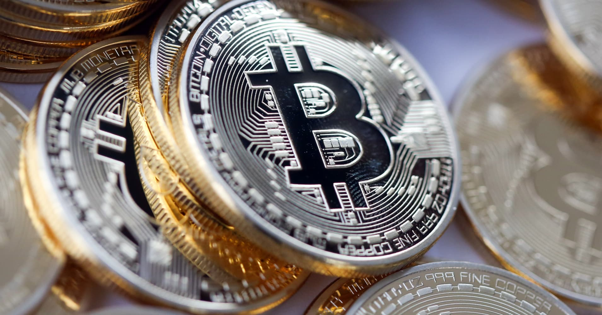

The 10 Most Important Cryptocurrencies Other Than Bitcoin
 Investopedia uses cookies to provide you with a great user experience. By using Investopedia, you accept our use of cookies. x Education General Dictionary Economics Corporate Finance Roth IRA Stocks Mutual Funds ETFs 401(k) Investing/Trading Investing Essentials Fundamental Analysis Portfolio Management Trading Essentials Technical Analysis Risk Management Markets News Company News Markets News Trading News Political News Trends Popular Stocks Apple (AAPL) Tesla (TSLA) Amazon (AMZN) AMD (AMD) Facebook (FB) Netflix (NFLX) Simulator Simulator Create an Account Join a Game My Simulator My Game Create a Game Your Money Personal Finance Wealth Management Budgeting/Saving Banking Credit Cards Home Ownership Retirement Planning Taxes Insurance Reviews & Ratings Best Online Brokers Best Savings Accounts Best Home Warranties Best Credit Cards Best Personal Loans Best Student Loans Best Life Insurance Best Auto Insurance Advisors Your Practice Practice Management Continuing Education Financial Advisor Careers Investopedia 100 Wealth Management Portfolio Construction Financial Planning Academy Popular Courses Investing for Beginners Become a Day Trader Trading for Beginners Technical Analysis Courses by Topic All Courses Trading Courses Investing Courses Financial Professional Courses Part Of Guide to Bitcoin Explore The Guide Overview Bitcoin Basics Overview How Bitcoin Works Why Do Bitcoins Have Value? How To Buy Bitcoin Bitcoin Mining Overview Bitcoin Mining, Explained How Does Bitcoin Mining Work? Is Bitcoin Mining Still Profitable? What Happens to Bitcoin After All Are Mined? Mining Pool How to Choose a Cryptocurrency Mining Pool How to Store Bitcoin Overview What are the Safest Ways to Store Bitcoin? What Is Cold Storage For Bitcoin Cold Storage Hot Wallet Paper Wallet What Are Cryptocurrency Custody Solutions? Best Bitcoin Wallets Bitcoin Exchanges Overview Bitcoin Exchange Cost To Buy Cryptocurrency at Exchanges Best Crypto Exchanges Bitcoin Advantages and Disadvantages Overview Advantages of Paying with Bitcoin Bitcoin vs. Credit Card Transactions Benefits & Risks of Trading Forex with Bitcoin Pros and Cons of Investing in Bitcoin IRAs Bitcoin vs. Other Cryptocurrencies Overview Bitcoin vs. Litecoin Bitcoin vs. Ripple 10 Most Important Cryptocurrencies Other Than Bitcoin Bitcoin vs. Bitcoin Cash Bitcoin vs. Ethereum Bitcoin vs. Altcoins Bitcoin Value and Price Overview What Determines the Price of 1 Bitcoin? Should You Buy Gold Or Bitcoin? How Much of the World's Money is in Bitcoin? Why Bitcoin Has a Volatile Value Cryptocurrency Cryptocurrency Strategy & Education
The 10 Most Important Cryptocurrencies Other Than Bitcoin
FACEBOOK TWITTER LINKEDIN By Nathan Reiff Updated Jan 8, 2020
Bitcoin has not just been a trendsetter, ushering in a wave of cryptocurrencies built on a decentralized peer-to-peer network, it’s become the de facto standard for cryptocurrencies, inspiring an ever-growing legion of followers and spinoffs.
Key Takeaways
A cryptocurrency, broadly defined, is virtual or digital money which takes the form of tokens or “coins.” Beyond that, the field of cryptocurrencies has expanded dramatically since bitcoin was launched over a decade ago, and the next great digital token may be released tomorrow, for all anyone in the crypto community knows. Bitcoin continues to lead the pack of cryptocurrencies, in terms of market capitalization, user base, and popularity. Virtual currencies such as Ethereum and XRP, which are being used more for enterprise solutions, have also become popular. Some altcoins are being endorsed for superior or advanced features vis-à-vis bitcoins.What Are Cryptocurrencies?
Before we take a closer look at some of these alternatives to Bitcoin, let’s step back and briefly examine what we mean by terms like cryptocurrency and altcoin . A cryptocurrency, broadly defined, is virtual or digital money which takes the form of tokens or “coins.” While some cryptocurrencies have ventured into the physical world with credit cards or other projects, the large majority remain entirely intangible.
The “crypto” in cryptocurrencies refers to complicated cryptography which allows for the creation and processing of digital currencies and their transactions across decentralized systems. Alongside this important “crypto” feature of these currencies is a common commitment to decentralization; cryptocurrencies are typically developed as code by teams who build in mechanisms for issuance (often, although not always, through a process called “mining”) and other controls.
Cryptocurrencies are almost always designed to be free from government manipulation and control, although as they have grown more popular this foundational aspect of the industry has come under fire. The currencies modeled after bitcoin are collectively called altcoins and have often tried to present themselves as modified or improved versions of bitcoin. While some of these currencies are easier to mine than bitcoin, there are tradeoffs, including greater risk brought on by lower levels of liquidity, acceptance and value retention.
Below, we’ll examine some of the most important digital currencies other than bitcoin. First, though, a caveat: it is impossible for a list like this to be entirely comprehensive. One reason for this is the fact that there are more than 2,000 cryptocurrencies in existence as of January 2020, and many of those tokens and coins enjoy immense popularity among a dedicated (if small, in some cases) community of backers and investors.
Beyond that, the field of cryptocurrencies is always expanding, and the next great digital token may be released tomorrow, for all anyone in the crypto community knows. While bitcoin is widely seen as a pioneer in the world of cryptocurrencies, analysts adopt many approaches for evaluating tokens other than BTC. It’s common, for instance, for analysts to attribute a great deal of importance to the ranking of coins relative to one another in terms of market cap. We’ve factored this into our consideration, but there are other reasons why a digital token may be included in the list as well.
1. Ethereum (ETH)
The first bitcoin alternative on our list, Ethereum is a decentralized software platform that enables Smart Contracts and Decentralized Applications (DApps) to be built and run without any downtime, fraud, control, or interference from a third party. The applications on Ethereum are run on its platform-specific cryptographic token, ether. Ether is like a vehicle for moving around on the Ethereum platform and is sought by mostly developers looking to develop and run applications inside Ethereum, or now by investors looking to make purchases of other digital currencies using ether. Ether, launched in 2015, is currently the second-largest digital currency by market cap after bitcoin, although it lags behind the dominant cryptocurrency by a significant margin. As of January 2020, ether s market cap is roughly 1/10 the size of bitcoin s.
During 2014, Ethereum launched a pre-sale for ether which received an overwhelming response; this helped to usher in the age of the initial coin offering (ICO) . According to Ethereum, it can be used to “codify, decentralize, secure and trade just about anything.” Following the attack on the DAO in 2016, Ethereum was split into Ethereum (ETH) and Ethereum Classic (ETC). As of Jan. 8, 2020, Ethereum (ETH) had a market cap of $15.6 billion and a per-token value of $142.54.
2. Ripple (XRP)
Ripple is a real-time global settlement network that offers instant, certain and low-cost international payments. Launched in 2012, Ripple “enables banks to settle cross-border payments in real-time, with end-to-end transparency, and at lower costs.” Ripple’s consensus ledger (its method of conformation) is unique in that it doesn’t require mining. Indeed, all of Ripple s XRP tokens were "pre-mined" before launch, meaning that there is no "creation" of XRP over time, only the introduction and removal of XRP from the market supply according to the network s guidelines. In this way, Ripple sets itself apart from bitcoin and many other altcoins. Since Ripple’s structure doesn t require mining, it reduces the usage of computing power and minimizes network latency.
So far, Ripple has seen success with its current business model; it remains one of the most enticing digital currencies among traditional financial institutions looking for ways to revolutionize cross-border payments. It is also currently the third-largest cryptocurrency in the world by overall market cap. As of Jan. 8, 2020, Ripple had a market cap of $9.2 billion and a per-token value of $0.21.
3. Litecoin (LTC)
Litecoin , launched in 2011, was among the first cryptocurrencies to follow in the footsteps of bitcoin and has often been referred to as “silver to bitcoin ’s gold.” It was created by Charlie Lee, an MIT graduate and former Google engineer. Litecoin is based on an open-source global payment network that is not controlled by any central authority and uses "scrypt" as a proof of work, which can be decoded with the help of CPUs of consumer-grade. Although Litecoin is like bitcoin in many ways, it has a faster block generation rate and hence offers a faster transaction confirmation time. Other than developers, there are a growing number of merchants who accept Litecoin. As of Jan. 8, 2020, Litecoin had a market cap of $3.0 billion and a per-token value of $46.92, making it the sixth-largest cryptocurrency in the world.
4. Tether (USDT)
Tether was one of the first and most popular of a group of so-called stablecoins , cryptocurrencies which aim to peg their market value to a currency or other external reference point so as to reduce volatility. Because most digital currencies, even major ones like bitcoin, have experienced frequent periods of dramatic volatility, Tether and other stablecoins attempt to smooth out price fluctuations in order to attract users who may otherwise be cautious.
Launched in 2014, Tether describes itself as "a blockchain-enabled platform designed to facilitate the use of fiat currencies in a digital manner." Effectively, this cryptocurrency allows individuals to utilize a blockchain network and related technologies to transact in traditional currencies while minimizing the volatility and complexity often associated with digital currencies. On Jan. 8, 2020, Tether was the fourth-largest cryptocurrency by market cap, with a total market cap of $4.6 billion and a per-token value of $1.00.
5. Bitcoin Cash (BCH)
Bitcoin Cash (BCH) holds an important place in the history of altcoins because it is one of the earliest and most successful hard forks of the original bitcoin. In the cryptocurrency world, a fork takes place as the result of debates and arguments between developers and miners. Due to the decentralized nature of digital currencies, wholesale changes to the code underlying the token or coin at hand must be made due to general consensus; the mechanism for this process varies according to the particular cryptocurrency.
When different factions can’t come to an agreement, sometimes the digital currency is split, with the original remaining true to its original code and the other copy beginning life as a new version of the prior coin, complete with changes to its code. BCH began its life in August of 2017 as a result of one of these splits. The debate which led to the creation of BCH had to do with the issue of scalability; the Bitcoin network has a strict limit on the size of blocks: one megabyte (MB). BCH increases the block size from one MB to eight MB, with the idea being that larger blocks will allow for faster transaction times. It also makes other changes, too, including the removal of the Segregated Witness protocol which impacts block space. As of Jan. 8, 2020, BCH had a market cap of $4.4 billion and a value per token of $240.80.
6. Libra (LIBRA)
One of the most-hyped cryptocurrencies is one that, as of January 2020, has yet to even launch. By mid-2018, rumors circulated that social media giant Facebook, Inc. ( FB ) was developing its own cryptocurrency. Given Facebook s incredible global reach and the potential for massive volumes of exchange across its platform, the cryptocurrency world had long speculated that the social media titan might launch its own digital token.
Rumors were formally confirmed on June 18, 2019, when Facebook released the white paper for Libra. The tentative launch date for the token is later in 2020, as Facebook has committed to sorting through regulatory barriers before launch. Libra will be overseen in part by a new Facebook subsidiary, the financial services outfit Calibra. When Libra does launch, it is sure to garner massive amounts of attention from those within (and outside of) the cryptocurrency sphere.
7. Monero (XMR)
Monero is a secure, private and untraceable currency. This open-source cryptocurrency was launched in April 2014 and soon spiked great interest among the cryptography community and enthusiasts. The development of this cryptocurrency is completely donation-based and community-driven. Monero has been launched with a strong focus on decentralization and scalability, and it enables complete privacy by using a special technique called “ring signatures.”
With this technique, there appears a group of cryptographic signatures including at least one real participant, but since they all appear valid, the real one cannot be isolated. Because of exceptional security mechanisms like this, Monero has developed something of an unsavory reputation: it has been linked to criminal operations around the world. Nonetheless, whether it is used for good or ill, there’s no denying that Monero has introduced important technological advances to the cryptocurrency space. As of Jan. 8, 2020, Monero had a market cap of $994.0 million and a per-token value of $57.16.
8. EOS (EOS)
Aside from Libra, one of the newest digital currencies to make our list is EOS . Launched in June of 2018, EOS was created by cryptocurrency pioneer Dan Larimer. Before his work on EOS, Larimer founded the digital currency exchange Bitshares as well as the blockchain-based social media platform Steemit. Like other cryptocurrencies on this list, EOS is designed after ethereum, so it offers a platform on which developers can build decentralized applications. EOS is notable for many other reasons, though.
First, its initial coin offering was one of the longest and most profitable in history, raking in a record $4 billion or so in investor funds through crowdsourcing efforts lasting a year. EOS offers a delegated proof-of-stake mechanism which it hopes to be able to offer scalability beyond its competitors. EOS consists of EOS.IO, similar to the operating system of a computer and acting as the blockchain network for the digital currency, as well as EOS coins. EOS is also revolutionary because of its lack of a mining mechanism to produce coins. Instead, block producers generate blocks and are rewarded in EOS tokens based on their production rates. EOS includes a complex system of rules to govern this process, with the idea being that the network will ultimately be more democratic and decentralized than those of other cryptocurrencies. As of Jan. 8, 2020, EOS had a market cap of $2.7 billion and a per-token value of $2.85.
9. Bitcoin SV (BSV)
Bitcoin SV (BSV), with "SV" in this case standing for "Satoshi Vision," is a hard fork of Bitcoin Cash. In this sense, BSV is a fork of a fork of the original Bitcoin network. A planned network upgrade for November of 2018 resulted in a protracted debate between mining and developing factions in the BCH community, leading to a hard fork and the creation of BSV. Developers of Bitcoin SV suggest that this cryptocurrency restores Bitcoin developer Satoshi Nakamoto s original protocol, while also allowing for new developments to increase stability and to allow for scalability. Bitcoin SV developers also prioritize security and fast transaction processing times.
As of Jan. 8, 2020, BSV had a market cap of $2.1 billion and a per-token value of $114.43.
10. Binance Coin (BNB)
Binance Coin (BNB) is the official token of the Binance cryptocurrency exchange platform. Founded in 2017, Binance has quickly risen to become the largest exchange of its kind globally in terms of overall trading volume. The Binance Coin token allows Binance users to trade in dozens of different cryptocurrencies efficiently on the Binance platform. BNB is used to facilitate transaction fees on the exchange and can also be used to pay for certain goods and services, including travel fees and more.
As of Jan. 8, 2020, BNB had a market cap of $2.3 billion and a per-token value of $14.71.
Article Sources
Investopedia requires writers to use primary sources to support their work. These include white papers, government data, original reporting, and interviews with industry experts. We also reference original research from other reputable publishers where appropriate. You can learn more about the standards we follow in producing accurate, unbiased content in our editorial policy.Ethereum. " Ethereum for Beginners. " Accessed Oct. 2, 2019.
Ethereum LinkedIn. " Ethereum. " Accessed Oct. 2, 2019.
Securities and Exchange Commission. " Report of Investigation Pursuant to Section 21(a) of the Securities Exchange Act of 1934: The DAO, " Page 9. Accessed Oct. 2, 2019.
CoinMarketCap. " Ethereum. " Accessed Jan. 8, 2020.
GitHub. " Ripple. " Accessed Oct. 2, 2019.
XRP Ledger. " XRP Ledger Overview. " Accessed Oct. 2, 2019.
CoinMarketCap. " XRP. " Accessed Jan. 8, 2020.
Litecoin. " What is Litecoin? " Accessed Oct. 2, 2019.
CoinMarketCap. " Litecoin. " Accessed Jan. 8, 2020.
Tether. " FAQs ," Accessed Jan. 8, 2020.
CoinMarketCap. " Tether ," Accessed Jan. 8, 2020.
Bitcoin. " What is Bitcoin Cash? " Accessed Oct. 2, 2019.
CoinMarketCap. " Bitcoin Cash. " Accessed Jan. 8, 2020.
Libra. " White Paper ," Accessed Jan. 8, 2020.
Facebook, Inc. " Coming in 2020: Calibra ," Accessed Jan. 8, 2020.
Monero. " Improving Monero. " Accessed Oct. 2, 2019.
Monero. " FAQ. " Accessed Oct. 2, 2019.
CoinMarketCap. " Monero. " Accessed Jan. 8, 2020.
CoinMarketCap. " EOS. " Accessed Jan. 8, 2020.
Bitcoin SV. " Bitcoin SV Is The Original Bitcoin ," Accessed Jan. 8, 2020.
CoinMarketCap. " Bitcoin SV ," Accessed Jan. 8, 2020.
Binance. " Buy Binance Coin ," Accessed Jan. 8, 2020.
CoinMarketCap. " Binance Coin ," Accessed Jan. 8, 2020.
Compare Accounts Advertiser Disclosure × The offers that appear in this table are from partnerships from which Investopedia receives compensation. Provider Name DescriptionRelated Articles
Cryptocurrency Strategy & Education
Cryptocurrency Burning : Can It Manage Inflation?
Bitcoin
Why Are Altcoins Falling Faster Than Bitcoin?
Blockchain
Where Is the Cryptocurrency Industry Headed in 2021?
Cryptocurrency Strategy & Education
What Is ERC-20 and What Does It Mean for Ethereum?
Cryptocurrency Strategy & Education
What Is Cryptocurrency Spoofing?
Bitcoin